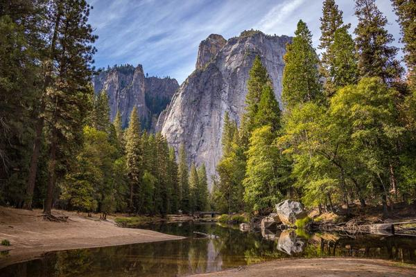
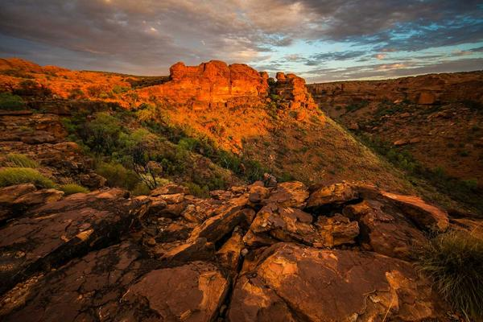

Mountains
A quiet place to enjoy the view.
Yerkebulan Korganbek | IT-2501
A quiet place to enjoy the view.
Animals are interesting subjects for photos. This is one of my favourite pictures in the gallery.

Blue water surrounded by mountains.
This layout uses named CSS Grid areas.
The sidebar is on the left. This content is on the right. The header and footer span both columns.
Hover over a photo or use the Tab key to see its caption.

